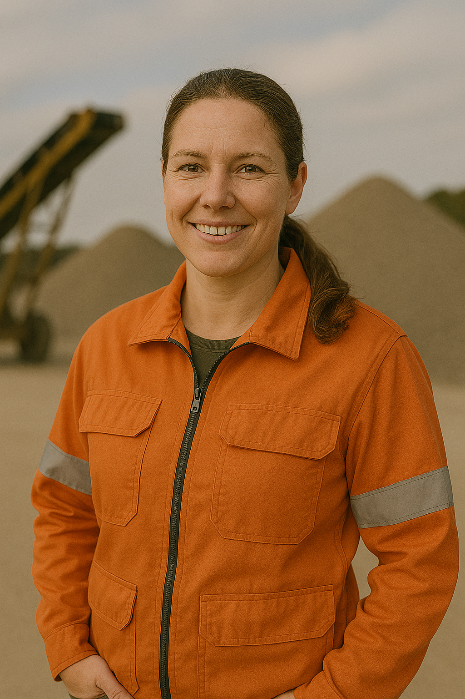
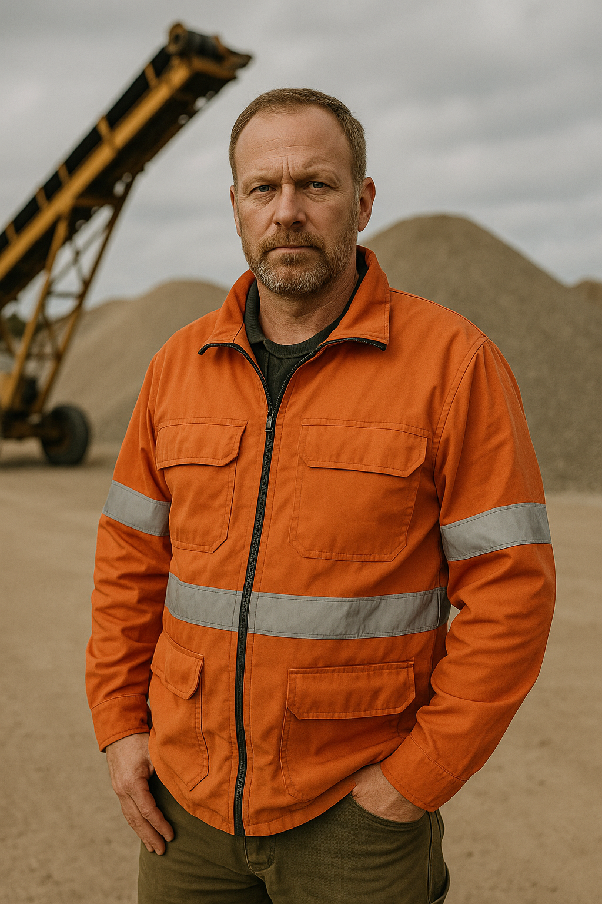
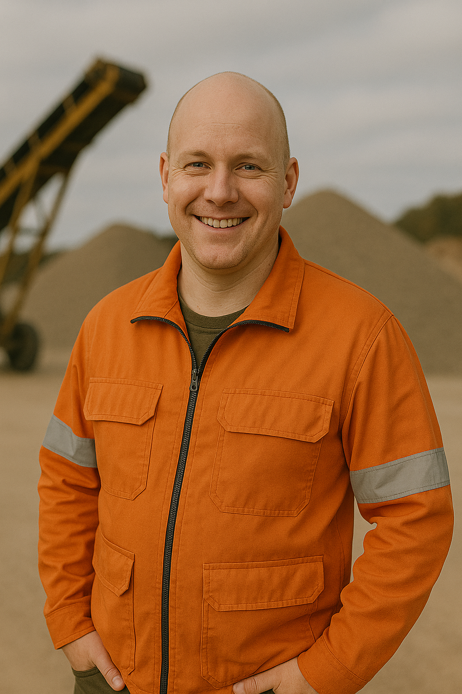

Evert Andersson
Evert ansvarar för allt som rör personal, från rekrytering och onboarding till arbetsmiljö och medarbetarutveckling.
Han arbetar nära våra medarbetare för att skapa en trygg och motiverad arbetsmiljö där alla kan växa och trivas
Evert är en utmärkt lyssnare och problemlösare, och han ser alltid till att varje medarbetare känner sig sedd och värdefull.

Lena Skog
Lena är vår expert på underhåll och reparation av fordon och maskiner, och hon ser till att alla lastbilar och maskiner alltid är i toppskick.
Med sitt tekniska kunnande och sin noggrannhet kan hon snabbt identifiera problem och åtgärda dem innan de påverkar arbetet.
Lena brinner för säkerhet och kvalitet, och hennes insatser minimerar driftstopp och ökar effektiviteten i vår verksamhet.

Conny Gustavsson
Conny har mångårig erfarenhet av logistik och transportplanering och är hjärtat i vårt operativa flöde.
Han ansvarar för att koordinera lastning, transporter och leveranser, samt för att optimera rutter och resurser så att verksamheten fungerar smidigt och effektivt. Conny har ett öga för detaljer och är alltid beredd att hitta lösningar när logistiska utmaningar uppstår.
Conny har ett öga för detaljer och är alltid beredd att hitta lösningar när logistiska utmaningar uppstår.

Stefan Eriksson
Stefan har över 15 års erfarenhet inom bygg- och transportprojekt och ansvarar för att våra projekt levereras i tid och inom budget.
Han är känd för sitt noggranna arbetssätt och sin förmåga att lösa problem snabbt när oväntade situationer uppstår.
Han uppmuntrar alltid sina kollegor att utvecklas och ta egna initiativ. På fritiden gillar han att vandra och delta i okala samhällsprojekt.